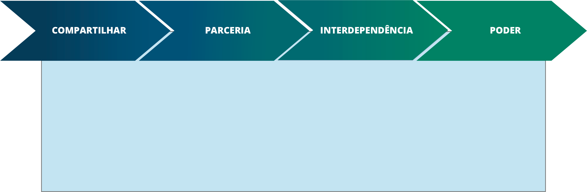

TÓPICO 03
O CUIDADO EM SAÚDE SOB A LÓGICA DO TRABALHO INTEGRADOS
TÓPICO 03
O CUIDADO EM SAÚDE SOB A LÓGICA DO TRABALHO INTEGRADOS
A seguir, apresentaremos alguns aportes teóricos que podem auxiliar na busca de estratégias e soluções para momentos desafiantes, evidenciados ao se colocar em prática certas iniciativas, a exemplo da implementação de reuniões integradas em uma UBS. Os elementos considerados pilares que sustentam a colaboração (D´AMOUR et al., 2005) são:
Quando um grupo passa a compartilhar os mesmos objetivos e metas na dinâmica do trabalho, é possível colocar o usuário na centralidade do cuidado, e não os profissionais envolvidos e os processos, como muitas vezes ocorre.
Nesse momento, se estabelece a parceria, conceito mais relacionado à atuação propriamente dita, e que impulsiona a comunicação efetiva, confiança e respeito mútuo. Quando isso ocorre, um profissional valoriza e reconhece o trabalho do outro.
Assim, os profissionais reconhecem suas limitações e a necessidade do outro para efetivação de determinadas ações. Emerge então a interdependência, conceito que deixa explicitada a existência de objetivos comuns e da potência do trabalho em equipe para atingi-los.
Para que todos esses elementos mencionados se tornem viáveis, é fundamental que haja equilíbrio nas relações de poder, de modo que todos os membros de uma equipe ou entre equipes se sintam empoderados, tornando as relações interprofissionais saudáveis e mais sólidas (COSTA, 2017). Tornar as relações mais horizontais possibilita a criação da identidade de grupo. A percepção de igualdade entre membros de um grupo pode reduzir preconceitos e favorecer a aproximação entre participantes (AMADO E VILELA, 2016).